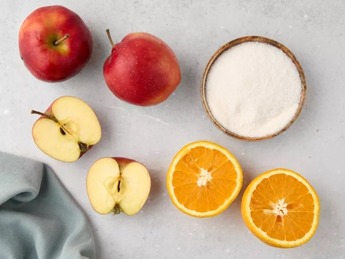
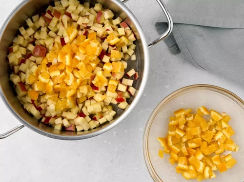
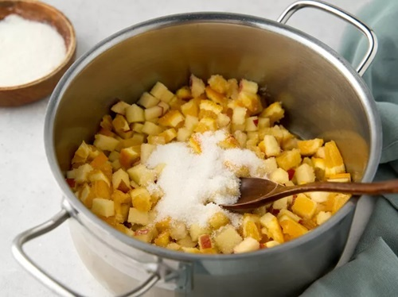
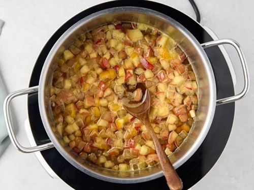
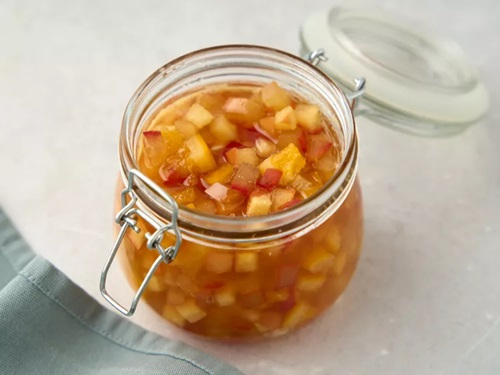
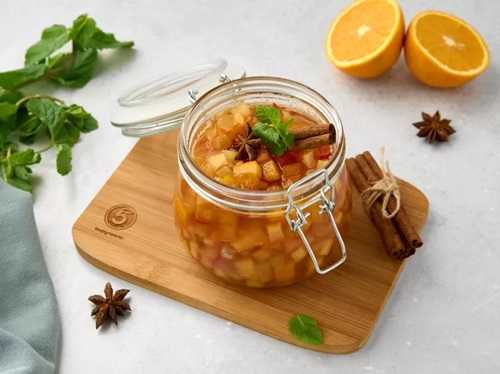

|
|
супы салаты гарниры десерты мои рецепты |
Яблочное варенье с апельсинамиЛето продлить нельзя, а вот солнечные апельсины можно заготовить на всю зиму. Не нужно придумывать сложных рецептов — достаточно просто добавить пару фруктов в банку домашнего яблочного варенья. Такой десерт простоит долго и будет напоминать о лете даже в самые холодные зимние вечера. Ингредиенты
ПриготовлениеПодготовкаПомойте яблоки и апельсин, оботрите их насухо бумажными салфетками. Подготовьте банку объемом 0,5 л с консервной крышкой. Простерилизуйте банку и крышку в кипящей воде, на пару или в духовке при температуре 150°С в течение 10-15 минут. Шаг 1Разрежьте яблоки пополам, вырежьте из них сердцевину с семенами. Нарежьте яблоки кубиками со стороной около 1 см. Переложите яблоки в кастрюлю. Нарежьте апельсин вместо с кожурой кубиками примерно такого же размера, как яблоки. Удалите из кубиков апельсинов косточки. Выложите кубики апельсина вместе с выделившимся соком в кастрюлю к яблокам. Чтобы кожура апельсина не давала горечь при варке и не испортила варенье, перед тем, как нарезать фрукт, ошпарьте его кипятком. Шаг 2Посыпьте яблоки и апельсин сахаром. Встряхните кастрюлю несколько раз, чтобы сахар равномерно распределился по фруктам. Накройте кастрюлю тканевым полотенцем и оставьте фрукты на 2-3 часа при комнатной температуре, чтобы сахар растворился в выделяющемся фруктовом соке. Шаг 3Поставьте кастрюлю с фруктами и сахаром на средний огонь. Доведите фруктовую массу до кипения, периодически ее помешивая деревянной ложкой. Уберите с массы собравшуюся на ней пену и проварите варенье в течение 5-10 минут. Снимите варенье с огня и дайте ему остыть в течение 3-4 часов. При желании добавьте в варенье на этом этапе варки молотую корицу или анис. Шаг 4Заполните банку теплым вареньем, плотно закройте крышку. Остудите банку с вареньем при комнатной температуре и поставьте на хранение в прохладное место. ПодачаПодайте варенье из яблок с апельсинами, украсив мятой, корицей и бадьяном. |
| © рецепты без лишних слов |